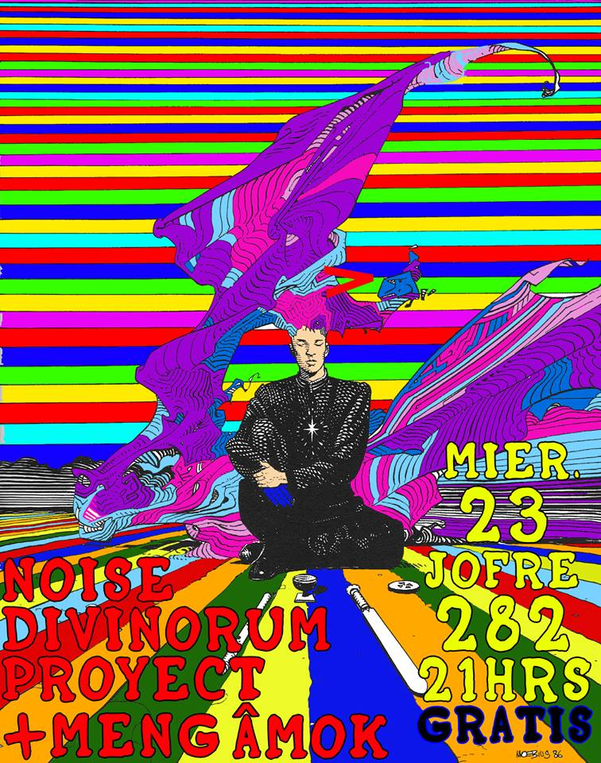
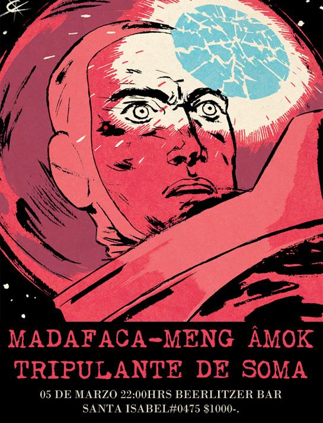
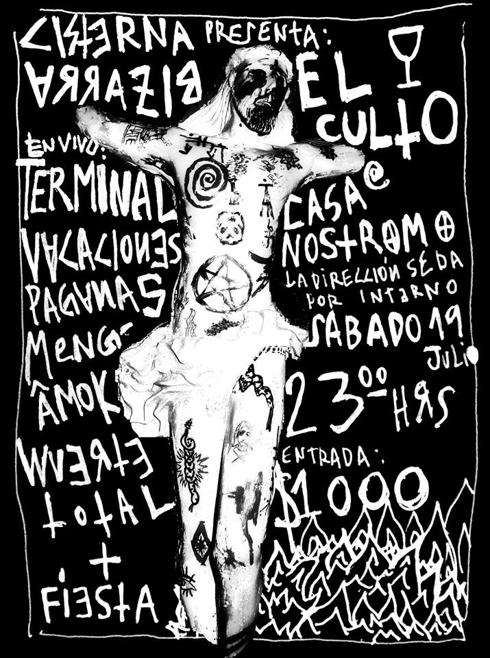
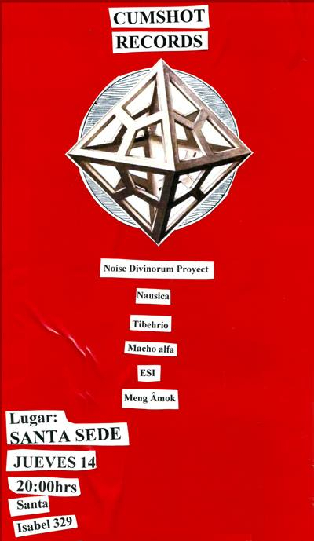
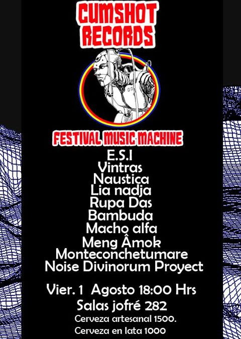
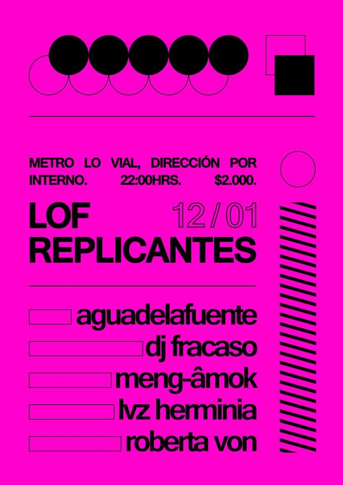
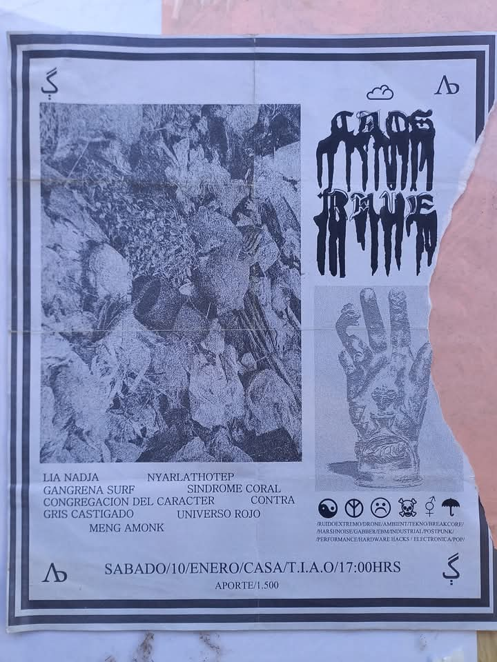

Meng-Âmok
Proyecto de música electrónica desde 2013. Ambient, techno, acid house y drum and bass.
Historia
Meng-Âmok nace en 2013 como el laboratorio electrónico de Cristóbal Zurita. A diferencia del trabajo académico con marimba, este proyecto se mueve en el territorio de los sintetizadores, los samplers y la secuenciación, explorando sonoridades que van desde atmósferas ambientales etéreas hasta construcciones rítmicas intensas inspiradas en el techno, el acid house y el drum and bass.
Meng-Âmok no es un proyecto paralelo ajeno a Minimal Marimba: es su contraparte electrónica. Muchas de las texturas, procesos y estructuras rítmicas desarrolladas en Meng-Âmok se integran posteriormente en el formato mixto de Minimal Marimba, donde la marimba acústica dialoga con la electrónica en tiempo real.
Estilo y referencias
- Ambient y texturas atmosféricas
- Techno y acid house
- Drum and bass y breakbeat
- Síntesis analógica y digital
- Sampling y secuenciación en vivo
Videos
Actuaciones en vivo y sesiones de estudio
Afiches
Cartelería de presentaciones seleccionadas









Meng-Âmok y Minimal Marimba
La electrónica desarrollada en Meng-Âmok es uno de los pilares de Minimal Marimba. Conoce cómo ambos proyectos se integran en el formato mixto.
Ver pilares del proyecto